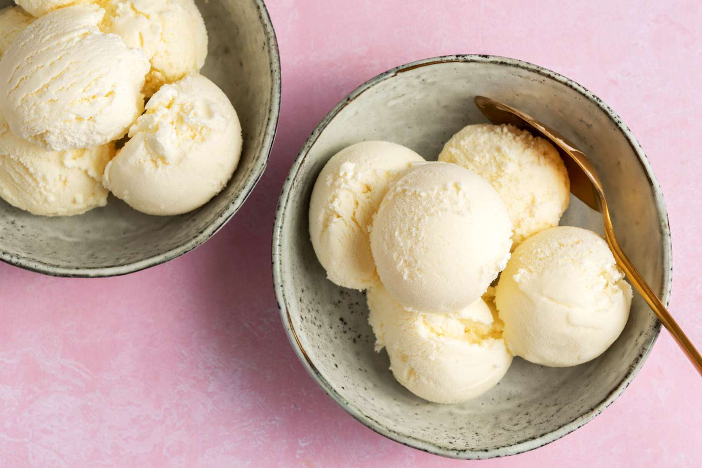

<!doctype HTML>
<html lang="en"></html>
<head>
    <meta charset="UTF-8">
    <title>Ice Cream</title>
</head>
<body>
    <h1>Ice Cream</h1>
    
    <p><h3><strong<em>Home-made ice cream</em></h3></p>
    <p>Cold and creamy vanilla ice cream</p>
    <p>Preperation time: 20 mins</p>
    <p>Cooking time: 1 hour</p>
    <p><h3><strong>Ingredients</strong></h3></p>
    <p><ul>
        <li>1 and 3/4 cups heavy cream
        <li>1 and 1/4 cup whole milk
        <li>3/4 cup of cup sugar
        <li>1/8 teaspoon fine sea salt
        <li> 1 tablespoon vanilla extract or 1 vanilla bean split in half lengthwise</li>
    </ul></p>
    <p><h3><strong>Steps</strong></h3></p>
    <p><ol>
        <li>Pour 1 cup of the cream into a saucepan and add the sugar, salt. Scrape the seeds of the vanilla bean into the pot and then add the vanilla pod to the pot. Warm the mixture over medium heat, just until the sugar dissolves. Remove from the heat and add the remaining cream, milk, and vanilla extract (if using extract). Stir to combine and chill in the refrigerator.</li>
        <li>When ready to churn, remove the vanilla pod, whisk mixture again and pour into ice cream maker. Churn according to the manufacturer’s instructions. Transfer the finished ice cream to an airtight container and place in the freezer until ready to serve. Enjoy!</li>
    </ol></p>
</body>